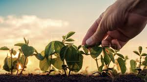
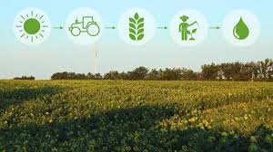
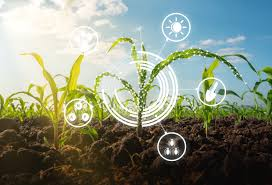

Próximo Salto Tecnológico
Durante seminário promovido pelo LIDE Paraná, especialistas destacaram que o crescimento sustentável do agronegócio depende de inovação, uso de biologia aplicada, energia renovável e decisões orientadas por dados.
Tecnologia, inteligência de dados, energia renovável e agricultura de precisão impulsionando produtividade com menor impacto ambiental.
Explorar ConteúdoO avanço tecnológico está redefinindo o agronegócio brasileiro, promovendo eficiência, sustentabilidade e crescimento econômico.
Durante seminário promovido pelo LIDE Paraná, especialistas destacaram que o crescimento sustentável do agronegócio depende de inovação, uso de biologia aplicada, energia renovável e decisões orientadas por dados.
Sensores, satélites e softwares permitem identificar necessidades específicas de cada área produtiva, reduzindo desperdícios e aumentando a produtividade.
Mais de 30 mil propriedades rurais no Paraná já produzem energia solar, fortalecendo a independência energética e reduzindo impactos ambientais.
O reaproveitamento de resíduos da produção agropecuária vem transformando passivos ambientais em fontes de energia.
Uma das tecnologias promissoras para os próximos anos, contribuindo para processos produtivos mais limpos e eficientes.
Mais de 70% das propriedades rurais brasileiras ainda enfrentam limitações de acesso à internet, dificultando a adoção de tecnologias digitais.



Estudos apontam que existe enorme potencial para expansão tecnológica em toda a cadeia produtiva do agronegócio, desde a produção até a comercialização.
Segundo lideranças do setor, a tecnologia representa uma ferramenta essencial para impulsionar o desenvolvimento sustentável, gerar renda, ampliar a competitividade e fortalecer a segurança alimentar.
Participe da Discussão